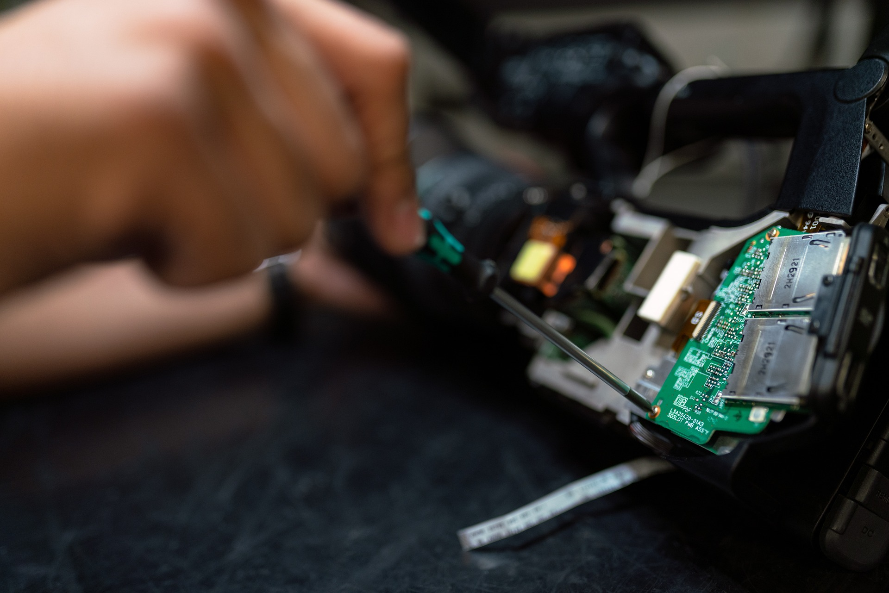

A tecnologia tem transformado de maneira significativa a vida tanto nas cidades quanto no campo do Paraná. Nas áreas urbanas, a inovação é evidente no crescimento das infraestruturas inteligentes, como o uso de sistemas de monitoramento para otimização do trânsito e gestão de recursos. As cidades paranaenses estão investindo em redes de fibra ótica e em soluções de smart city para melhorar a qualidade de vida dos seus habitantes.
No Paraná, a integração da tecnologia entre a vida urbana e rural está promovendo avanços notáveis. Nas cidades, a implementação de tecnologias digitais e automação está mudando a maneira como os serviços são prestados e como a infraestrutura é gerida. Soluções de smart grids e aplicativos de mobilidade urbana são exemplos de como a tecnologia está melhorando a funcionalidade das cidades paranaenses.
A transformação tecnológica no Paraná é visível tanto nas áreas urbanas quanto rurais, refletindo uma crescente integração entre as duas esferas. Nas cidades, a tecnologia está sendo usada para melhorar a eficiência dos serviços públicos, como no caso de sistemas de iluminação pública controlados remotamente e plataformas de gestão de resíduos.
A transformação tecnológica no Paraná é visível tanto nas áreas urbanas quanto rurais, refletindo uma crescente integração entre as duas esferas. Nas cidades, a tecnologia está sendo usada para melhorar a eficiência dos serviços públicos, como no caso de sistemas de iluminação pública controlados remotamente e plataformas de gestão de resíduos.
